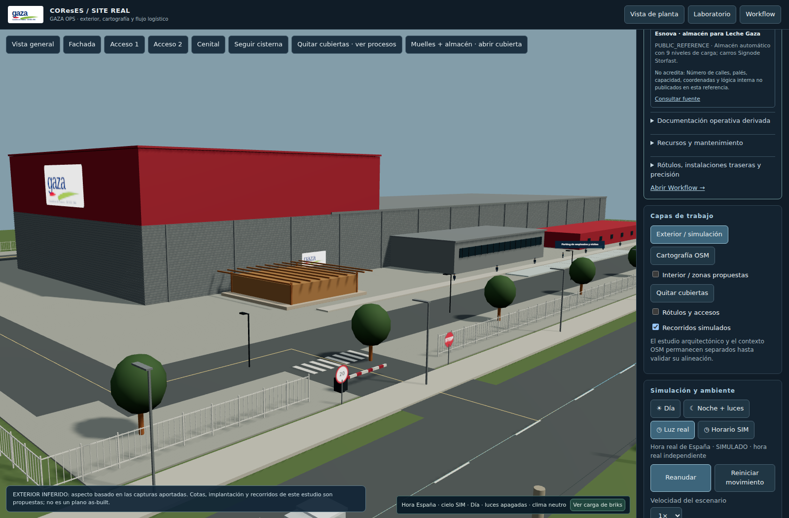
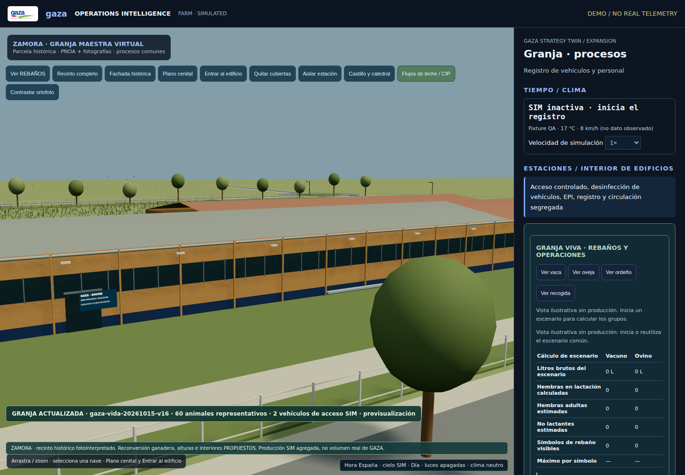
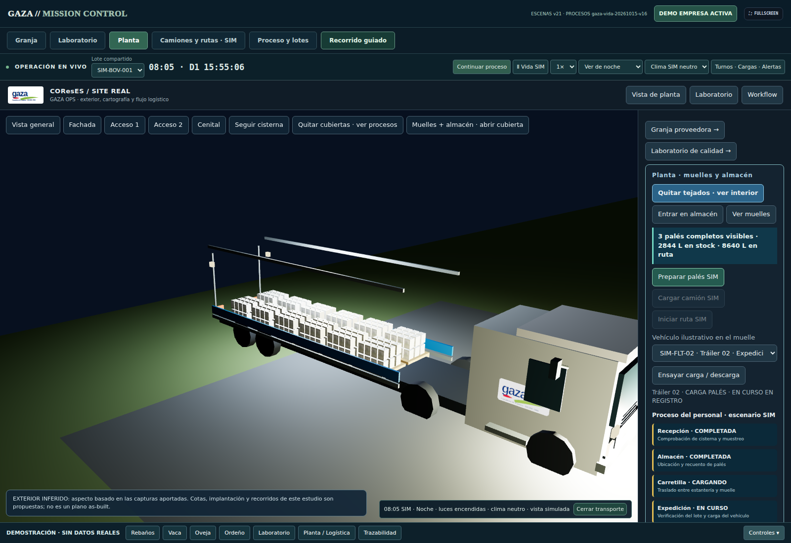
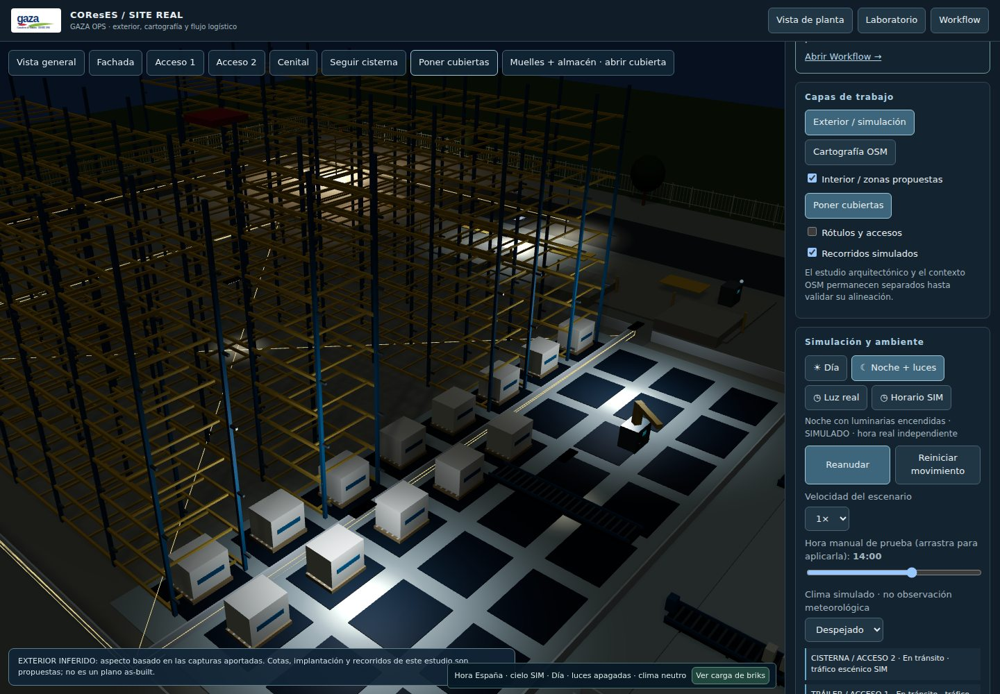
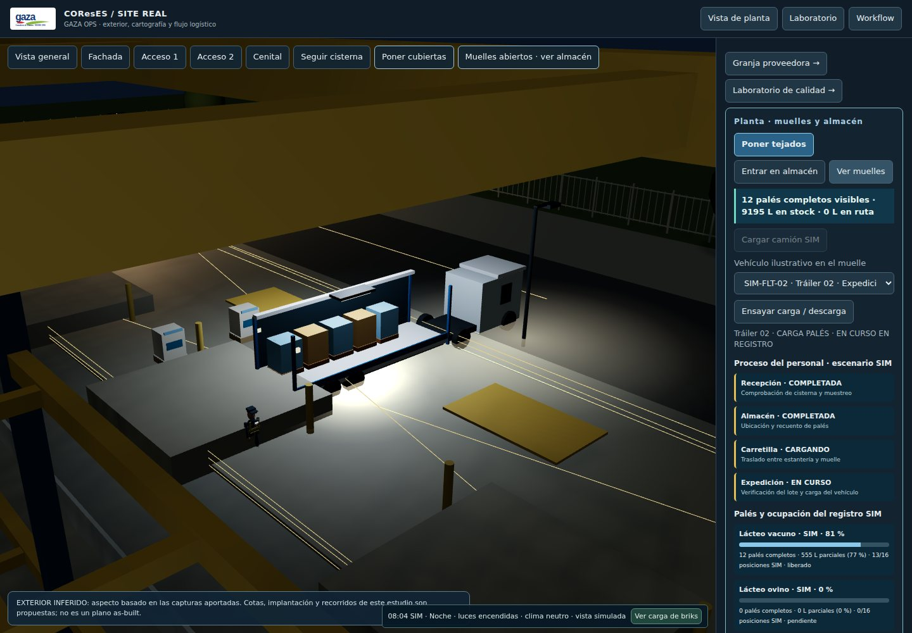
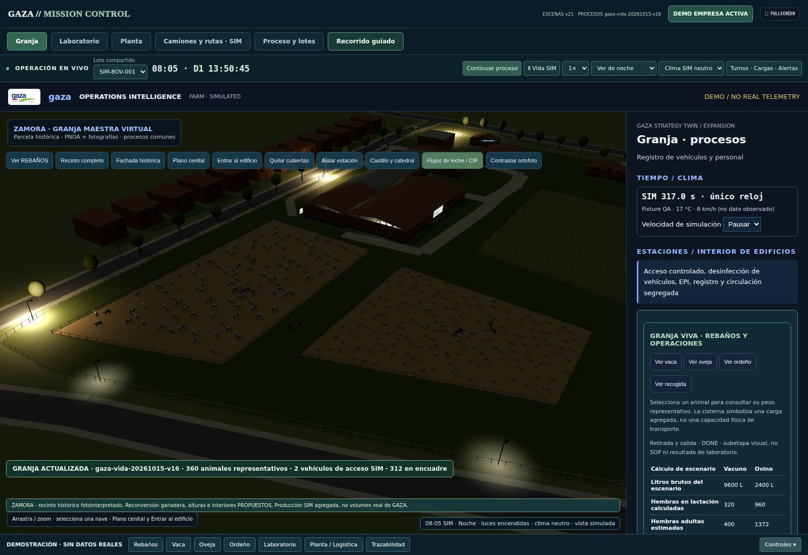
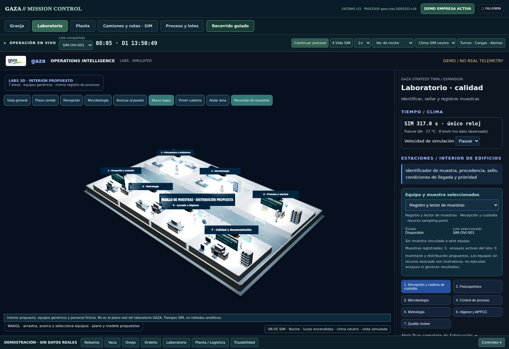
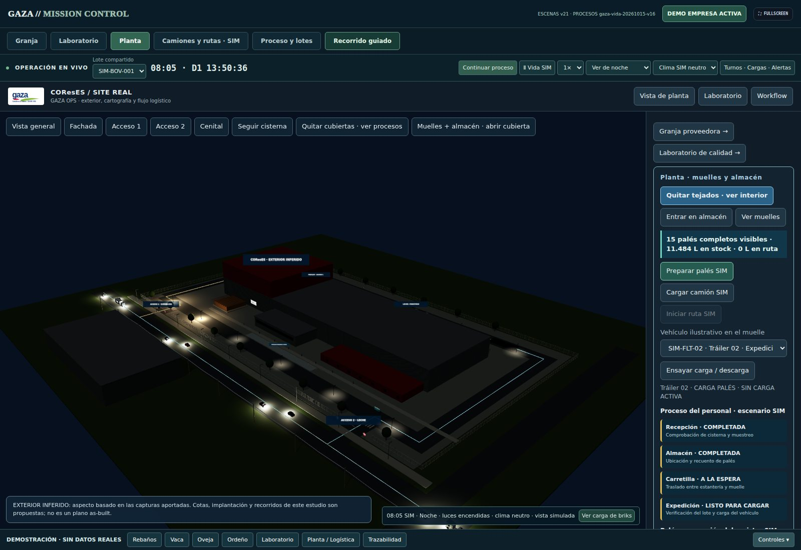

Identidad en el demostrador
Una misma marca, de la granja al camión
El logotipo de referencia une las pantallas y las superficies visuales del modelo. Las siguientes son capturas del prototipo 3D; los edificios, vehículos, interiores y existencias representados pertenecen a un escenario SIM.

Planta · fachada y acceso
Rótulos en la nave, viales, control de acceso y detalles del exterior inferido.
Explorar planta 3D ↗
Granja · naves y procesos
Identificación de áreas, recinto, actividad animal y enlace con la recogida SIM.
Explorar granja 3D ↗Laboratorio · identidad y calidad
Estaciones de recepción, análisis y custodia en un interior propuesto.
Explorar laboratorio 3D ↗
Camiones · carga y expediente
Detalle de cabina rotulada, mercancía y muelle. La flota y sus fichas son ficticias.
Explorar flota SIM ↗Identidad gráfica usada como referencia, sin aprobación corporativa. Las capturas muestran estados puntuales de la simulación, no observaciones en tiempo real de instalaciones o camiones de GAZA.
00 · Capturas del entorno 3D
Planta, muelles y escenas nocturnas
Capturas tomadas directamente del visor WebGL en pruebas de navegador. Los palés y vehículos responden al registro del escenario; la geometría, las cantidades y los turnos son ilustrativos, no una medición de instalaciones ni existencias reales.





01 · Visión ejecutiva
Una demostración operativa que conecta áreas, recursos y decisiones
El proyecto ya no se limita a una pantalla de pedidos. La versión actual reúne una presentación integrada de granja 3D, laboratorio, fábrica por departamentos, flujos de calidad, inventario y expedición, con acceso adicional a mapas y sistemas de contexto. Su finalidad es mostrar una metodología de ingeniería y software aplicable, tras validación, a problemas reales de coordinación.
Experiencia transferible
Dirección de proyectos, planificación, proveedores, compras, recursos, costes, documentación, integración tecnológica y gestión de incidencias.
Prototipo funcional en desarrollo
Escenarios y modelos basados en hipótesis y referencias públicas. No utiliza información interna, telemetría industrial autorizada ni datos personales de empleados de GAZA.
02 · Experiencia recomendada
Comenzar por la versión de demostración de empresa
La simulación integrada se abre en Mission Control. Los accesos anteriores redirigen a esta experiencia. El recorrido completo empieza en demostracion.html; la portada de planta abre el almacén con palés SIM y permite cambiar a muelles. La demo general empieza en FARM con modo de empresa y una partición de datos aislada del trabajo normal.
03 · Accesos correctos a los módulos
Vistas actuales, mapas y simulación
La demostración integrada y el entorno de exploración geoespacial son dos accesos distintos. Los siguientes enlaces llevan a las vistas concretas dentro de Mission Control, o a sus herramientas específicas.
Demostración completa
Granja → laboratorio → planta → workflow con el registro de empresa aislado.
Abrir demo vigente ↗Site Real / Coreses
Modelo exterior fotointerpretado y 16 áreas funcionales seleccionables, con actividad sintética.
Abrir planta actual ↗GIS 3D
Geometría OSM y alineación espacial. Referencias, inferencias y dimensiones pendientes distinguidas.
Abrir cartografía 3D ↗Territorio y contexto
OSM/OSRM, corredores, meteorología pública y DGT cuando el proveedor responde.
Abrir territorio ↗Seguimiento de camiones
Rutas OSRM cuando están disponibles, vehículos sintéticos, paradas, repostaje, peaje hipotético y retrasos. No hay GPS de flota real.
Abrir flota simulada ↗Laboratorio 3D
Siete áreas, estaciones, muestras, equipos ilustrativos y decisiones por proceso.
Abrir laboratorio ↗Flujo / calidad
Registro común de lotes, recepciones, ensayos, retenciones, fabricación, palés y expediciones.
Abrir workflow ↗Campus GIS
Viales públicos, puntos de acceso candidatos y fuentes OSM. No es un levantamiento autorizado.
Abrir campus GIS ↗Arquitectura de integración
Referencias públicas, incógnitas de ERP/OT y propuesta de acoplamiento read-only.
Abrir sistemas ↗Control Tower clásica
Escenario independiente de expediciones, útil como demostración complementaria, no como portada del proyecto actual.
Abrir escenario legado ↗La navegación «Matrix» combina varias vistas y es más exigente; para una primera revisión conviene abrir una vista por vez.
04 · Profundidad del desarrollo
Modelo compartido, no solo animaciones
Proceso y genealogía
Un registro canónico conecta origen → tanque → cisterna → silo → fabricación → producto envasado → palé → expedición. Los dos lotes de especie, balances, muestras y retenciones permanecen diferenciados.
Planificación y calidad
Catálogo de 16 tareas temporizadas, cinco ensayos en el ejemplo y tres decisiones de calidad independientes. Reglas de precedencia y exclusividad de recursos; la supervisión humana no se omite.
Site Real por áreas
Recepción, silos, tratamiento, CIP, envasado, materiales, paletizado, ASRS, expediciones, administración, calidad y mantenimiento entre las 16 áreas funcionales.
Laboratorio ilustrativo
Recepción, fisicoquímica, microbiología, envase, metrología, lavado y revisión; inventario visual de 17 equipos/elementos de trabajo propuestos, sin atribuir modelos reales a GAZA.
Granja 3D y red virtual
Reconversión conceptual del recinto histórico de Zamora, actividad de vacuno y ovino, rebaños representativos y contribuciones sintéticas por origen; cifras no equivalentes al censo real.
Presentación y operación móvil
Interfaz táctil, cámaras, inspección de áreas, vistas diurnas/nocturnas, reloj común, turnos ilustrativos y actividad visual asociada a tareas.
05 · Arquitectura e implantación responsable
De evidencia pública a una posible integración validada
| Etapa | Alcance antes de implantar |
|---|---|
| Diagnóstico | Conocer responsables, sistemas vigentes, trazabilidad, tiempos, incidencias y necesidades reales. |
| Datos | Acceso read-only autorizado, separación IT/OT, trazabilidad de origen y controles de acceso. |
| Piloto | Validar un flujo de expedición con el equipo; establecer KPIs base y comparar resultados medibles. |
| Evaluación | Escalar solo con aceptación operativa, seguridad, mantenimiento y viabilidad económica contrastada. |
06 · Evidencias y alcance de la revisión
Qué está comprobado y qué queda pendiente
| Comprobación | Resultado |
|---|---|
| Archivos, rutas, enlaces internos y estructura de Mission Control | Verificados en CI y capturas WebGL (16/10/2026). |
| Procesos, flujo de calidad, departamentos, interfaz móvil | Implementación y especificaciones presentes; commits previos documentan QA y pruebas visuales. |
| Despliegue público, servicio GIS externo y comportamiento en un navegador ajeno | Escenas WebGL verificadas en navegador automatizado; disponibilidad pública sujeta al despliegue de GitHub Pages. |
| Correspondencia física con instalaciones, capacidades y software de Leche GAZA | Requiere documentación autorizada, datos y validación de la compañía. |
Código y documentación: repositorio GAZA · Demostración · Site Real · Procesos.
07 · Candidatura
Quiero aportar al equipo de expediciones y logística
Mi interés prioritario es desempeñar el puesto al que ya me he inscrito en InfoJobs. Este proyecto es una muestra de iniciativa y de cómo puedo abordar coordinación, operaciones y mejora de procesos desde mi experiencia técnica. Propongo una breve conversación y una demostración guiada, sin comprometer recursos ni acceso a sistemas internos de la empresa.
Zamora · 658 482 992
lobatohernandezhector@gmail.com
github.com/HectorLobatoHernandez